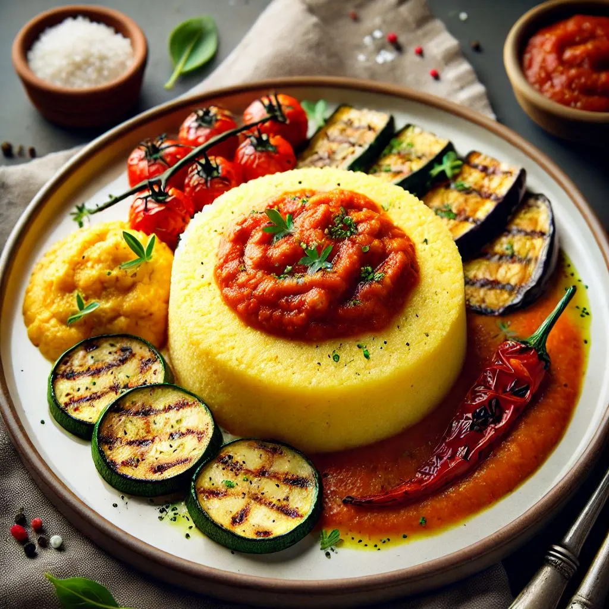

Polenta
Ingrédients
- 200g de semoule de maïs
- 1 litre d'eau
- 1 cuillère à café de sel
- 50g de beurre
- 50g de parmesan râpé
- Poivre (au goût)
Instructions
- Porter l'eau à ébullition dans une grande casserole.
- Ajouter le sel à l'eau bouillante.
- Verser lentement la semoule de maïs en remuant constamment pour éviter les grumeaux.
- Réduire le feu à doux et continuer à cuire en remuant régulièrement pendant environ 30 à 40 minutes,
jusqu'à ce que la polenta épaississe et se détache des parois de la casserole.
- Retirer du feu et incorporer le beurre et le parmesan râpé.
- Assaisonner avec du poivre selon votre goût.
- Servir chaud comme accompagnement ou laisser refroidir et couper en tranches pour griller ou frire.